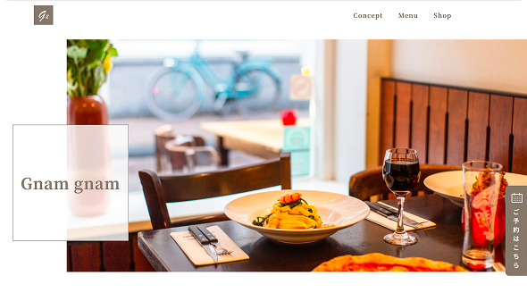
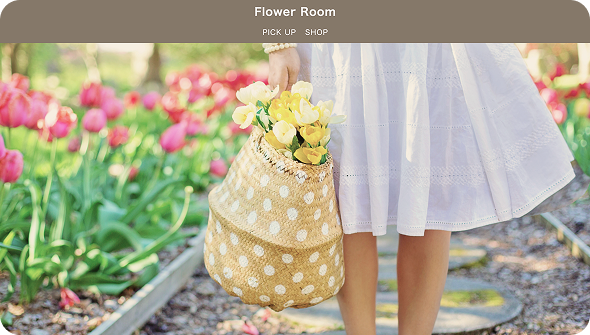
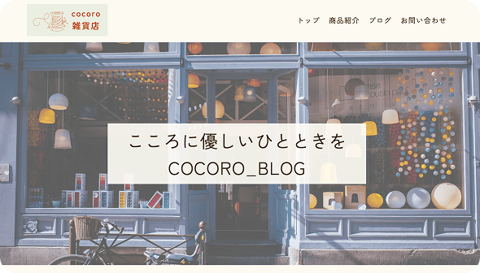

01
Wing Technology
WEB DESIGN
信頼感と未来感を意識し、 シンプルで見やすいコーポレートサイトを制作しました。
つくったもの、いろいろ。
WEB DESIGN
信頼感と未来感を意識し、 シンプルで見やすいコーポレートサイトを制作しました。

CODING
デザインカンプをもとに、 HTML/CSSで丁寧に再現。 細かな動きにもこだわって制作しました。

CODING
写真の魅力を活かしながら余白や配置を意識して 丁寧にコーディングしました。
BANNER
やさしい色合いとメリハリを意識し、 視線を引くデザインに仕上げました。

CODING
細かなレイアウトや文字組みにこだわり、 デザインを忠実に再現しました。
CODING
デザインの再現だけでなく、 動きや変化にもこだわって実装しました。